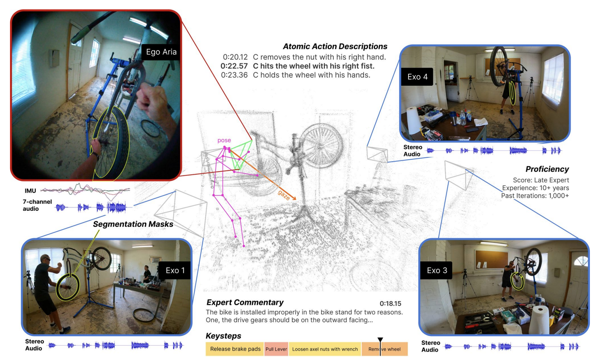
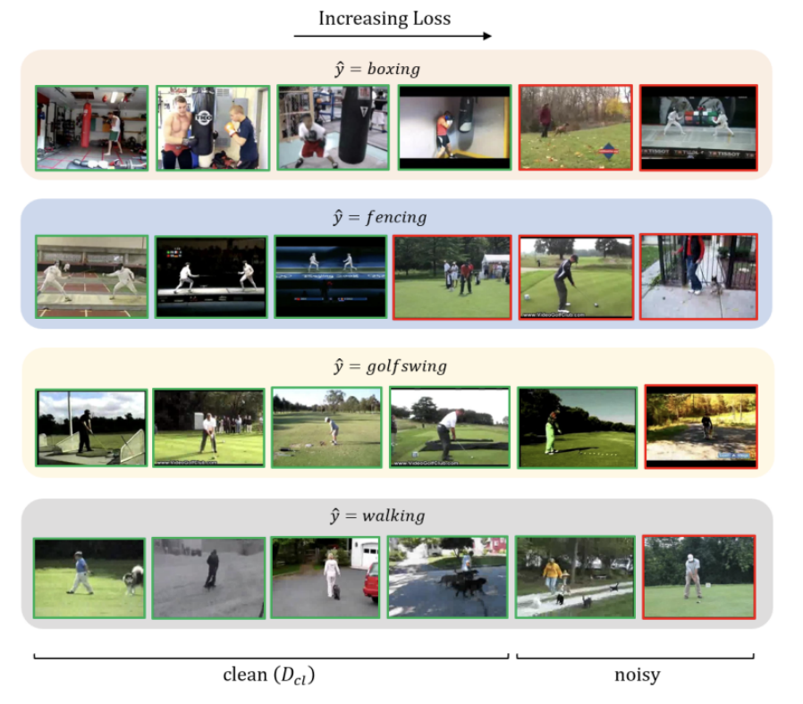
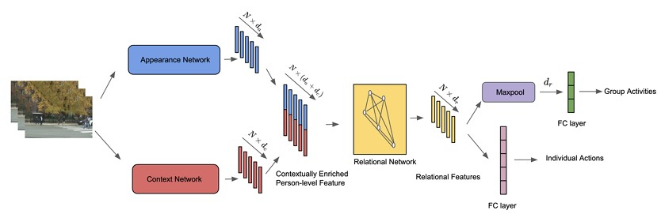
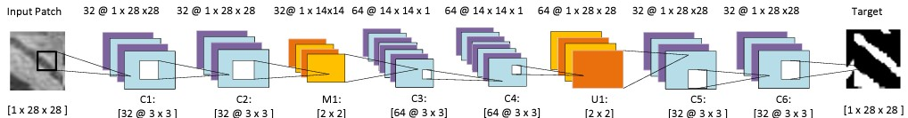

- [2022/11/30] Ego-Exo4D has been launched! [arxiv] [blog] [website]
- [2022/12/10] Our paper CleanAdapt won the best paper runner-up award at ICVGIP, 2022.
- [2022/10/23] One paper accepted at ICVGIP, 2022.
- [2020/10/12] One paper accepted at ICPR, 2020.
|

|
Ego-Exo4D: Understanding Skilled Human Activity from First- and Third-Person Perspectives
Kristen Grauman, Andrew Westbury, Lorenzo Torresani, Kris Kitani, Jitendra Malik, Avijit Dasgupta* et al.
Arxiv 2023
TL;DR: Ego-Exo4D is a diverse, large-scale multimodal multiview video dataset capturing skilled human activities.
pdf / webpage / bibtex
|
|

|
Overcoming Label Noise for Source-free Unsupervised Video Domain Adaptation
Avijit Dasgupta, C. V. Jawahar, Karteek Alahari
ICVGIP 2022 (Best paper runner up)
TL;DR: CleanAdapt proposes a self-training source-free video domain adaptation method, generating pseudo-labels from a source pre-trained model to bridge domain gaps. Achieving a 7% gain over source-only models, CleanAdapt outperforms state-of-the-art approaches in video adaptation on various datasets.
pdf / webpage / bibtex
|
|

|
Context Aware Group Activity Recognition
Avijit Dasgupta, C. V. Jawahar, Karteek Alahari
ICPR, 2020
We show the efficacy of using contextual information such as scene labels, human keypoints etc., for group activity recognition.
bibtex
|
|

|
A Fully Convolutional Neural Network based Structured Prediction Approach Towards the Retinal Vessel Segmentation
Avijit Dasgupta*, Sonam Singh* (*equal contribution)
ISBI, 2017
bibtex
|
This template is a modification to Jon Barron's website.
|
{kind=link}